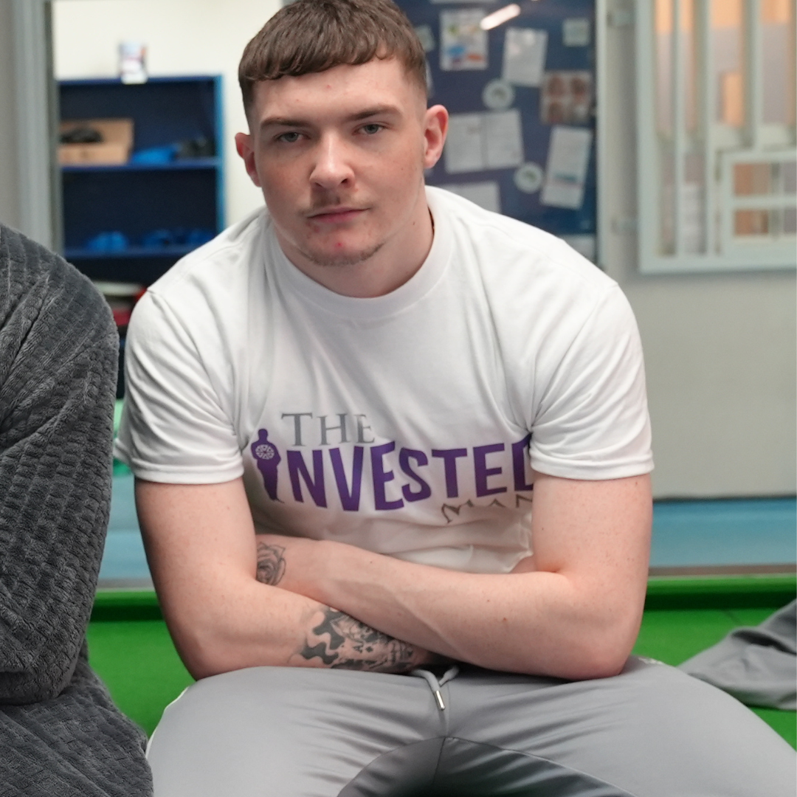
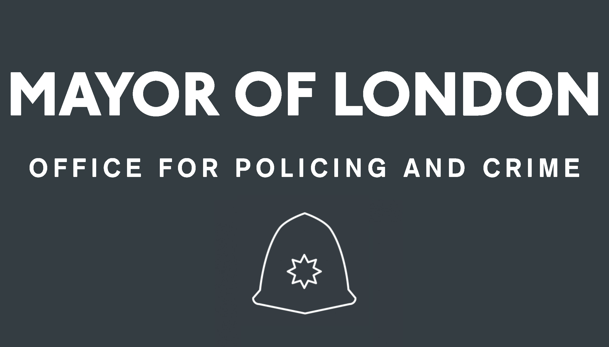
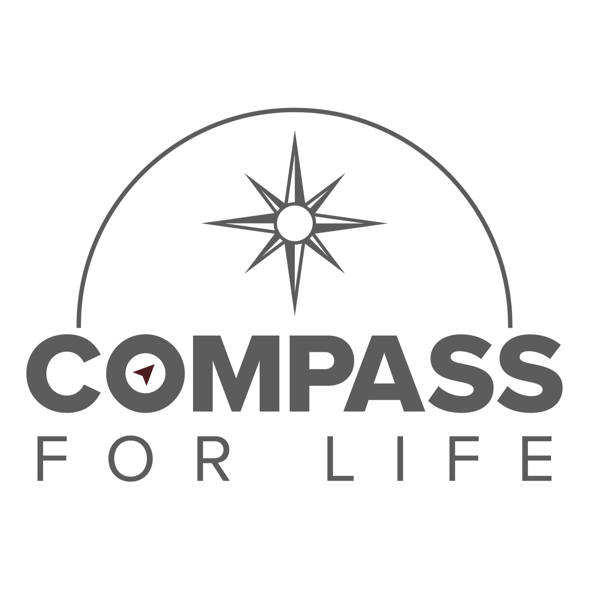
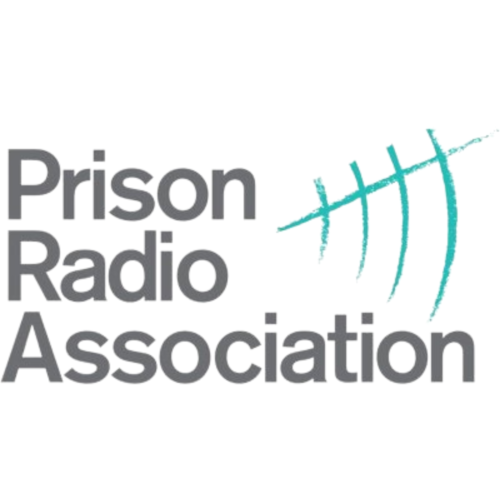

For young adults inside or leaving prison. Delivered in collaboration with EY Outreach and an ecosystem of statutory and community agencies. The pilot programme at HMP Brinsford was funded by the Violence Reduction Partnership.
What Makes This Programme Different
At the heart of this programme is a creative intervention that most programmes would never attempt: each cohort of young adults writes, performs, and produces their own short film together as a group.
This is not a media exercise. It is an identity exercise. The process of creating their own story forces each participant to answer the question TIM builds everything around: who am I, and who am I becoming?
The finished film is a digital asset that belongs to them — a permanent, tangible record of a redirected identity that no one can take away.
Resettlement fails when it treats release as a logistics problem. Accommodation, employment, benefits — none of it holds if the person walking out of the gate still identifies as an offender.
Identity is the intervention that makes everything else hold.

From the Cohort
The young men on the Resettlement & Rehabilitation Programme at HMP Brinsford didn't just complete a 12-week course. They created something that belongs to them — a short film, a permanent record of a redirected identity, and a reminder of who they chose to become.
83% of participants left with a positive outcome. Every single one left with something no system can take away.
The Programme in Action
The promo film from the Brinsford cohort — evidence of what identity-led intervention looks like in practice.
HMP & YOI Brinsford · Resettlement & Rehabilitation Programme · VRP Funded
Also Delivered At
The Resettlement & Rehabilitation Programme has been delivered at HMP ISIS in London, co-delivered by TIM and EY Outreach. This programme was commissioned by the Mayor of London's Office for Policing and Crime (MOPAC), demonstrating TIM's model transfers across institutions and geographies.

Commissioned by the Mayor of London's
Office for Policing and Crime (MOPAC)
HMP ISIS · London · Commissioned by MOPAC · Delivered by TIM & EY Outreach
The Programme
Four phases built around the I.N.V.E.S.T. framework, integrating identity work with the creative intervention and resettlement planning.
| Weeks 1–3 Foundation |
Identity assessment using the I.N.V.E.S.T. framework. Participants begin to examine who they are separate from their offence, their label, and their history. The question is introduced: who are you when the system isn't defining you? |
| Weeks 4–6 Creative Development |
Each participant develops their short film concept — writing their story and identifying their narrative arc. The creative process is the therapeutic process. To tell your story, you must first understand it. |
| Weeks 7–9 Production |
Filming and production. Participants create and feature in their own short film with professional support. The finished film becomes a digital asset they own — a permanent record of who they are choosing to become. |
| Weeks 10–12 Integration |
Resettlement planning built alongside identity work. Employment, education, and community connections secured through EY Outreach and partner agencies. The I.N.V.E.S.T. pathway completed through to Transform. |
Outcomes — HMP Brinsford (2022–23)
All outcomes tracked and attributed by the delivery partnership. Delivered at HMP & YOI Brinsford in collaboration with EY Outreach.
Who We Work With
TIM co-designs with prison leadership teams and integrates with the resettlement infrastructure already in place — not replacing it, but giving it an identity foundation to build on.
This programme uses a multi-agency approach — bringing together specialist partners across coaching, personal development, creative media, and statutory services to deliver a holistic resettlement experience.
| Prison SLTs | Co-designed with Senior Leadership Teams — built around the specific context of each institution. |
| EY Outreach | Lead delivery partner, bringing coaching capacity, creative expertise, and community connections. |
| Jordz Visuals | Creative media partner — supporting participants in the production of their own short film as a digital identity asset. |
| Compass for Life | Personal development — guiding participants through structured self-discovery and life-skills work. |
| Goldmine Coaching | Coaching partner — providing 1:1 and group coaching throughout the programme. |
| In House Records | Music production partner — working with young adults to create original soundtracks for their short films. |
| Prison Radio Association | HMP Brinsford cohort participated in a live podcast broadcast on National Prison Radio (NPR) — giving participants a platform and a public voice. |
| VRP | Violence Reduction Partnership — lead funder, recognising TIM's model as credible and evidence-based. |
| Statutory agencies | Probation, housing, benefits, and health services integrated into the delivery ecosystem. |
| Community orgs | Local organisations providing ongoing connection and support post-release. |
Our Delivery Partners


Want to bring the Resettlement and Rehabilitation Programme to your institution?
Talk to Us About Partnership